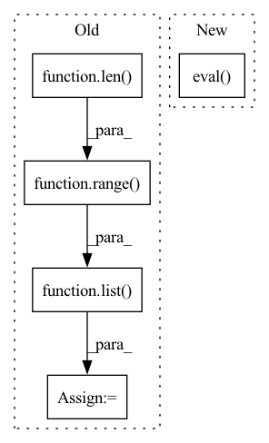

Pattern ID :29914
Before Change
// 画框设置不同的颜色
hsv_tuples = [(x / len(self.class_names), 1., 1.)
for x in range(len( self.class_names) ) ]
self.colors = list(map(lambda x: colorsys.hsv_to_rgb(*x), hsv_tuples))
self.colors = list(
map(lambda x: (int(x[0] * 255), int(x[1] * 255), int(x[2] * 255)),
self.colors))
//---------------------------------------------------//
// 检测图片
After Change
device = torch.device("cuda" if torch.cuda.is_available() else "cpu")
self.net.load_state_dict(torch.load(self.model_path, map_location=device))
self.net = self.net.eval()
print("{} model, and classes loaded.".format(self.model_path))
if self.cuda:
In pattern: SUPERPATTERN
Frequency: 3
Non-data size: 5
Instances Fragment ID: 88745770
Project Name: bubbliiiing/centernet-pytorch
Commit Name: d8a34002c4045ca583b43a5f431513f8fd5ac37c
Time: 2021-10-09
Author: 47347516+bubbliiiing@users.noreply.github.com
File Name: centernet.py
M Class Name: CenterNet
N Class Name: CenterNet
M Method Name: generate(1)
N Method Name: generate(1)
M Parent Class: object
N Parent Class: object
M File Name: centernet.py
N File Name: centernet.py
M Start Line: 77
M End Line: 110
N Start Line: 102
N End Line: 114
Before Change
print("{} model, anchors, and classes loaded.".format(self.model_path))
// 画框设置不同的颜色
hsv_tuples = [(x / len(self.class_names), 1., 1.)
for x in range(len( self.class_names) ) ]
self.colors = list( map(lambda x: colorsys.hsv_to_rgb(*x), hsv_tuples))
self.colors = list(
map(lambda x: (int(x[0] * 255), int(x[1] * 255), int(x[2] * 255)),
self.colors))
After Change
self.net = YoloBody(self.anchors_mask, self.num_classes)
device = torch.device("cuda" if torch.cuda.is_available() else "cpu")
self.net.load_state_dict(torch.load(self.model_path, map_location=device))
self.net = self.net.eval()
print("{} model, anchors, and classes loaded.".format(self.model_path))
if self.cuda:
Fragment ID: 88745774
Project Name: bubbliiiing/yolov4-pytorch
Commit Name: 34d2e3e10b07fd5a27a911b0800fb8354f1949a7
Time: 2021-09-21
Author: 47347516+bubbliiiing@users.noreply.github.com
File Name: yolo.py
M Class Name: YOLO
N Class Name: YOLO
M Method Name: generate(1)
N Method Name: generate(1)
M Parent Class: object
N Parent Class: object
M File Name: yolo.py
N File Name: yolo.py
M Start Line: 83
M End Line: 112
N Start Line: 94
N End Line: 98
Before Change
vgg_pretrained_features = models.vgg16(pretrained=True, progress=show_progress).features
self.layer_names = ["relu1_2", "relu2_2", "relu3_3", "relu4_3"]
self.content_feature_maps_index = 1 // relu2_2
self.style_feature_maps_indices = list(range(len( self.layer_names) ) ) // all layers used for style representation
self.slice1 = torch.nn.Sequential()
self.slice2 = torch.nn.Sequential()After Change
def __init__(self, requires_grad=False, show_progress=False):
super().__init__()
// Keeping eval() mode only for consistency - it only affects BatchNorm and Dropout both of which we won"t use
vgg16 = models.vgg16(pretrained=True, progress=show_progress).eval()
vgg_pretrained_features = vgg16.features
self.layer_names = ["relu1_2", "relu2_2", "relu3_3", "relu4_3"]
self.slice1 = torch.nn.Sequential() Fragment ID: 88745773
Project Name: gordicaleksa/pytorch-neural-style-transfer-fast
Commit Name: d87f2a81441aff791ca9ca985e91a9948e0fb227
Time: 2020-05-29
Author: gordicaleksa@gmail.com
File Name: models/definitions/perceptual_loss_net.py
M Class Name: Vgg16
N Class Name: Vgg16
M Method Name: __init__(3)
N Method Name: __init__(3)
M Parent Class: torch.nn.Module
N Parent Class: torch.nn.Module
M File Name: models/definitions/perceptual_loss_net.py
N File Name: models/definitions/perceptual_loss_net.py
M Start Line: 18
M End Line: 21
N Start Line: 18
N End Line: 19